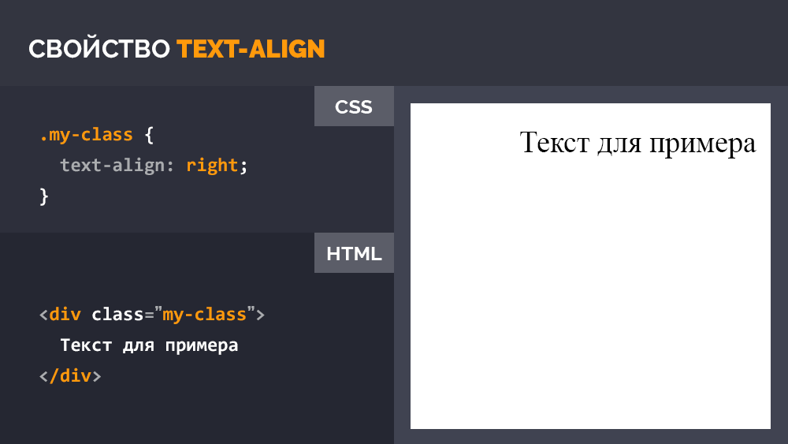

В этом уроке вы узнаете что такое CSS, для чего нужен и как его правильно использовать. Это базовый урок из серии "Для самых маленьких", в котором я постараюсь объяснить наиболее понятным языком основы стилизации документов посредством CSS - Каскадных таблиц стилей (Cascading Style Sheets).

Часть 1. Основы CSS
В данном уроке мы затронем стилизацию документа, созданного с использованием языка разметки, т.е. придание определенной формы, определенного цвета, последовательности, размеров различных элементов и текста на странице, рассмотрим наиболее эффективные приемы работы с каскадными таблицами стилей. Поняв основы, вы сможете самостоятельно правильно и эффективно стилизовать HTML документы.
Обращаю ваше внимание, что в данном руководстве мы будем рассматривать CSS только в контексте использования с HTML документами в веб-браузере. С помощью CSS можно стилизовать и другие документы, использующие различные языки разметки. Например, стилизовать XML в Android приложениях, SVG или различные Desktop Environment в Unix-подобных операционных системах.
Вообще, CSS довольно элементарный формальный язык, который придумали для описания внешнего вида документов. Это говорит о том, что он довольно прост и состоит из самобытных примитивных конструкций, которые не так сложны для изучения. Самое сложное не синтаксис, не правила написания конструкций, а огромное количество CSS свойств для запоминания, которые выполняют различные задачи. Благо, все правила англоязычные с соответствующей смысловой нагрузкой. Простой перевод на наш язык дает понятие о том, что это правило делает и наоборот - при переводе того, что мы хотим добиться определенным свойством на английский язык, велика вероятность того, что мы получим правильное свойство. Это значительно упрощает запоминание CSS правил на интуитивном уровне. Например, если нужно задать фоновый цвет достаточно сделать перевод на английский, в результате чего получаем background-color (отдельные слова в CSS пишутся через дефис).
1.1 Использование CSS в HTML документах
CSS довольно просто использовать в HTML документах. Его можно:
-
Подключить как внешний CSS файл к документу. Для этого достаточно прописать тег
<link rel="stylesheet" href="путь/до/файла.css">в теге<head>. Это наиболее распространенный способ подключения таблиц стилей к документу, когда внешнее оформление страниц выносится в отдельный внешний CSS файл. Прописать стили в самом документе, используя тег <style>.
Это менее популярный способ внутренней стилизации, который применяется в особых случаях, когда: А. Базовые стили должны быть моментально интерпретированы браузером до загрузки основных CSS файлов; Б. Когда стили должны быть опционально изменены в процессе работы над веб-сайтом, например, опциональный размер шрифта и другие опции оформления при работе сайта на какой-либо CMS, поддерживающей создание параметров в админ. панели или в других случаях, когда это действительно необходимо.
Пример вывода опции из админки в тело документа:
<style> .class { background-color: <?php echo $bgc_option; ?> } </style>Инлайновое использование CSS свойств в конкретных тегах с помощью атрибута style.
Такой способ внутренней стилизации используется очень редко в особых случаях, когда необходимо: А. Вывести из админ. панели сайта параметры для конкретных тегов; Б. Сделать динамическую стилизацию элементов посредством JavaScript.
Пример инлайнового вывода фонового изображения секции из админ. панели сайта:
Это довольно топорный способ стилизации элементов на странице, который не стоит использовать в повседневной работе. Только в исключительных случаях, когда это действительно необходимо. Инлайновая стилизация (от слова inline - встроенный) работает только в том элементе, в котором она прописана. Инлайновые стили имеют наибольший приоритет. То-есть если во внешнем файле у вас указана одна картинка для фона, а в инлайновых стилях другая - сработает вторая.<section style="background-image: url(<?php echo $bgi_option; ?>)">Вывод $bgi_option - простой пример, показывающий что значение свойства задается в админке сайта.
1.2 CSS синтаксис
Как я уже говорил ранее, CSS имеет довольно простой синтаксис. Давайте разберем его.
Правила объявлений настолько просты, что их можно описать в одном предложении. Сначала пишется селектор, который выбирает конкретный элемент на странице, после фигурных скобок пишутся свойства со значениями после двоеточия, а сами свойства отделяются друг от друга точкой с запятой. Это все.
Просто, не правда ли?
Самое сложное в CSS объявлении - селектор. Подробнее узнать о том, как формируются и как используются селекторы вы можете в уроке Все CSS селекторы в одном уроке - это очень важная тема, так как здесь раскрывается вся магия выборки элементов на странице, рекомендую посмотреть этот урок в обязательном порядке всем новичкам.
Вкратце CSS селектор - (от слова select - выбирать) - это конструкция, с которой начинается каждый блок объявлений и которая служит для выборки элемента или однотипных элементов на странице для дальнейшей стилизации. Чаще всего в качестве селектора используется определенный класс тега, например:
<!-- HTML: -->
<div class="my-class"></div>
/* CSS: */
.my-class {
background-color: #999;
}
Здесь селектором выступает класс my-class тега div, который получает необходимое оформление в CSS файле. В данном случае фоновый цвет - серый. Соответственно, если на странице есть несколько тегов (не только div) с классом my-class, все эти элементы получат одинаковое оформление - серый фон цвета #999.
1.3 Каскадирование, наследование и приоритет
Понять принцип каскадирования несложно. Давайте взглянем на пример:
<!-- HTML: -->
<div class="parent">
Далеко-далеко за словесными горами в стране.
<div class="children">
Далеко-далеко за словесными горами.
</div>
</div>
/* CSS: */
.parent .children {
color: #666;
}
.parent {
padding: 10px;
color: #999;
}
Из примера мы видим, что в CSS написан каскад, в котором класс .parent стоит на первом месте, после него через пробел указан дочерний класс .children, который отвечает уже за стилизацию только дочернего элемента. Дочерний тег обязательно должен быть вложен в тег с классом .parent. Если в HTML документе мы вынесем тег .children из тега div с классом .parent, он потеряет свое оформление, так как каскад уже не будет работать, структура нарушена.
Что мы получим в результате нашего примера. Тег с классом .children получит цвет текста #666, так как имеет более длинный каскад, а .parent покрасится в цвет #999. Родительский класс будет иметь внутренние отступы 10px, в то время, как дочерний этих отступов иметь не будет, так как свойство padding не распространяется на дочерние элементы. Однако если мы уберем color: #666; у селектора .parent .children, то его текст покрасится в цвет родителя color: #999;
Каскадирование и наследование позволяют стилизовать конкретные элементы на странице и определять приоритет применяемых стилей. Давайте рассмотрим иерархию приоритетов.
- Самым высоким приоритетом обладают свойства, в конце объявления которых указана конструкция !important. Не важно, какую вложенность имеет селектор, каким образом используются стили - инлайново или подключением внешнего файла, у них будет наибольший приоритет. Я крайне не рекомендую использовать !important при стилизации, так как в процессе поддержки или даже в процессе разработки в дальнейшем обязательно возникнет путаница, которую спасет только рефакторинг стилей. Как показывает практика, всегда есть способ не использовать !important.
Пример использования !important:.my-class { background-color: #999!important; } - Следующим по значимости приоритетом обладают инлайновые стили, прописанные в самом теге через атрибут style, которые мы рассмотрели ранее: <section style="background-color: #eee;">
- Стили, заданные в теге style в самом документе имеют меньший приоритет;
- Еще меньшим приоритетом обладают стили, подключенные к документу как внешний CSS файл посредством тега <link>
- Самый низкий приоритет, окромя стандартных стилей браузера имеют стили родительских селекторов перед дочерними, например:
<!-- HTML: --> <div class="my-class"> <p>Далеко-далеко за словесными горами.</p> </div>
В результате тег/* CSS: */ .my-class { margin: 10px; } /* будет иметь меньший приоритет для дочернего p, чем: */ .my-class p { margin: 15px; }<p>, находящийся в теге с классом .my-class получит значение свойства margin: 15px.
Стоит также отметить, что количество классов или идентификаторов, а также наличие дополнительных псевдоклассов и конструкций в селекторе повышают приоритет для стилизации:
.my-class.class-2 {
margin: 10px;
} /* будет иметь больший приоритет, чем: */
.my-class {
margin: 15px;
}
И т.д. по логической цепочке.
И в завершение по приоритетам важно отметить, что стили, идущие в последующих объявлениях ниже по документу также имеют наибольший приоритет. Например:
.my-class {
margin: 10px;
} /* будет иметь меньший приоритет, чем идущий после него такой-же селектор: */
.my-class {
margin: 15px;
}
В результате последний селектор в потоке документа получит значение свойства margin: 15px, так как является наиболее приоритетным. Однако если бы селектор первого объявления был длиннее, значния его свойств несомненно бы превалировали.
Что касается наследования, здесь все просто. Все дочерние элементы наследуют некоторые свойства родителя. Какие именно свойства наследуются предстоит выяснить вам в процессе изучения различных свойств и применении их на практике. Например, цвет текста всегда наследуется потомками, а отступы - нет.
Часть 2. CSS свойства
Я думаю нет смысла перечислять все CSS свойства, так как их очень много и практичней обратиться к справочнику всех CSS свойств. Я рекомендую изучить CSS свойства в справочнике на HTMLBook.
Однако рассмотрим 10 самых используемых CSS свойств в верстке. Я взял 10 больших CSS файлов из своих проектов и отсортировал свойства по частоте использования.
CSS Свойство |
Частота использования |
Описание |
| color | 960 раз | Цвет текста элемента: |
| background-color | 755 раз | Цвет фона элемента:  |
| font-size | 524 раза | Размер шрифта: |
| opacity | 435 раз | Уровень прозрачности элемента: |
| padding | 372 раза | Размер полей внутри элемента: |
| width | 356 раз | Ширина блочного элемента, не включая размеры границ и полей: |
| margin | 311 раз | Внешние отступы элемента: |
| height | 305 раз | Высота блочного элемента, не включая размеры границ и полей: |
| font-weight | 280 раз | Насыщенность шрифта: |
| text-align | 245 раз | Горизонтальное выравнивание текста:  |
Часть 3. Медиа-запросы
Медиа-запросы в CSS - это база для создания отзывчивой верстки, позволяющая стилизовать элементы в зависимости от размера экрана или устройства, на котором отображается веб-сайт. Технически Медиа-запрос - это простое логическое выражение, которое может быть или истинным или ложным. Условиями для такого выражения являются либо параметры устройства, на котором отображается веб-страница, либо размер экрана в пикселах.
В данном руководстве мы рассмотрим базовые возможности медиа-запросов, которые необходимы для адаптивной верстки сайтов и практически полезны.
Медиа-запрос пишется в самом файле стилей или в теле документа (тег style) и начинается с объявления правила @media. Структура медиа запроса довольно проста:
Условием может выступать либо устройство - all (все устройства), screen, print, tv и т.д., либо медиа-функции, которые задают параметры устройства или разрешение экрана, на котором отображается документ.
Наиболее часто используемые медиа-функции определяют именно максимальное и минимальное разрешение экрана устройства:
Здесь устройства с максимальным разрешением экрана 480px или минимальным разрешением 320px будут отображать текст тега с классом .my-class серым. Данное условие я привел для примера, практически оно бесполезно. Чаще всего требуется указать либо только максимальное разрешение, либо только минимальное, в пределах которого будет прменяться свойство.
Кроме всего прочего, как мы видим из примера, функции могут содержать условия and (И), not (НЕ) и only (Для старых браузеров, не поддерживающих медиа-запросы). Нет логического оператора or (ИЛИ), его роль выполняет запятая. Медиа-функции, как мы видим заключают в обычные круглые скобки.
Размещение свойств в медиа-запросе не дает никакого приоритета, поэтому логичней размещать медиа-запросы в конце CSS документа, либо загружать тегом link внешний CSS файл с медиа-запросами после загрузки основных стилей сайта для правильного переопределения последних на разных разрешениях или на различных устройствах.
Часть 4. Рекомендации
Ну и конечно-же мои рекомендации. За всю практику верстки у меня накопились некоторые правила, которыми я с радостью поделюсь.
- Старайтесь использовать только внешние подключаемые CSS файлы. Внутреннюю стилизацию применяйте только если это необходимо для корректного функционирования веб-сайта;
- Старайтесь стилизовать только классы. Не стилизуйте идентификаторы (задаются через id="решетку" и пишутся через #решетку). Старайтесь меньше стилизовать теги без классов. Например, если вы стилизуете тег h3, а в дальнейшем SEO специалист решит, что заголовок здесь не уместен, обычный div должен иметь такие-же свойства с классом заголовка и отображаться также. Как вариант можно сделать дубликаты HTML тегов в классы, например, .h1, .h2, .h3, .footer, .header, .aside и стилизовать их соответствующим образом;
- Старайтесь стилизовать элементы максимально автономно, сокращайте цепочку каскада до одного блока, чтобы было меньше зависимостей от родительских элементов. Это необходимо для максимально эффективного повторного использования блоков на странице и их модификации в других местах верстки. Но без фанатизма. Не стоит задавать отдельные классы каждому тегу в блоке, если не предполагается его автономное использование. Если вы перенесете блок в другое место страницы, он должен отображаться также и не зависеть от родителя. В этом вам поможет использование какой-либо методологии именования классов. Не важно, будет это БЭМ, методология, либо разработанная на основе вашего личного опыта или простые правила, предложенные мной - это лучше, чем называть классы как попало и строить нелогичные и длинные цепочки классов;
- Старайтесь называть классы тегов в зависимости от того, какую функцию выполняет блок, а не от того, какое в нем будет содержание. Например, если у вас есть секция с отзывами в виде карусели, не стоит называть селекторы, используя слова reviews, otzivy и т.д. Лучше назвать carousel-once, если планируется выводит по одному пункту карусели на странице. В дальнейшем, возможно вы будете использовать эту карусель не только для оформления отзывов, а задействуете этот код например, для вывода списка коллег компании. В таком случае наименование класса reviews будет несколько неуместным;
- Используйте CSS препроцессоры, в этом нет ничего сложного. Мой выбор пал на препроцессор Sass уже довольно давно и я его рекомендую к использованию. У нас есть неплохой урок, в котором я рассказываю как легко пользоваться препроцессором и как он упрощает жизнь: Sass для самых маленьких - подробное руководство;
- Используйте сброс стандартных стилей браузера или нормализацию, которая приводит стандартные стили к общему для всех браузеров знаменателю. Я использую в своих проектах Normalize.css, который входит в состав CSS фреймворка Bootstrap;
- Когда почувствуете, что выполняете слишком много однообразной работы в процессе верстки - переходите к использованию какого-либо CSS фреймворка или разработайте свой с наиболее часто используемыми элементами, это ускорит вашу работу. Я использую в работе только сетку Bootstrap без стилистического оформления кнопок, панелей и прочих элементов. Этого вполне достаточно для эффективной работы. Хорошая адаптивность Bootstrap сетки по умолчанию также радует;
- Самостоятельно экспериментируйте со свойствами. Открывайте CSS справочник и пробуйте. Только так можно наработать опыт, запомнить какое свойство что делает и довести написание стилей документа до автоматизма.
Премиум уроки от WebDesign Master


Другие уроки по теме «Веб-разработка»
- Создание красивого аккордеона с плавной анимацией переключения. Материалы урока
- Создание адаптивных плиток Masonry на чистом CSS. Материалы урока
- Создание красивого сайта с Parallax эффектом при движении мыши. Материалы урока
- Создание красивого сайта с Parallax эффектом и анимацией заголовка. Материалы урока
- Создание красивой галереи на сайте. Материалы урока
- Создание сайта с красивой анимацией фона. Материалы урока